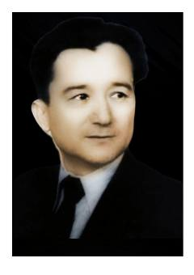

KYO'zbek yozuvchisi va dramaturgi Komil Yashinning hayoti va ijodiga bag'ishlangan biografik ma'lumotnoma.
Ushbu kitob o'zbek yozuvchisi, shoiri va dramaturgi Komil Yashinning hayoti va ijodiy faoliyatiga bag'ishlangan ma'lumotnomadir. Unda yozuvchining tarjimai holi, yozgan asarlari, Hamza Hakimzoda Niyoziy bilan ijodiy aloqalari hamda erishgan davlat mukofotlari haqida batafsil ma'lumotlar keltirilgan.